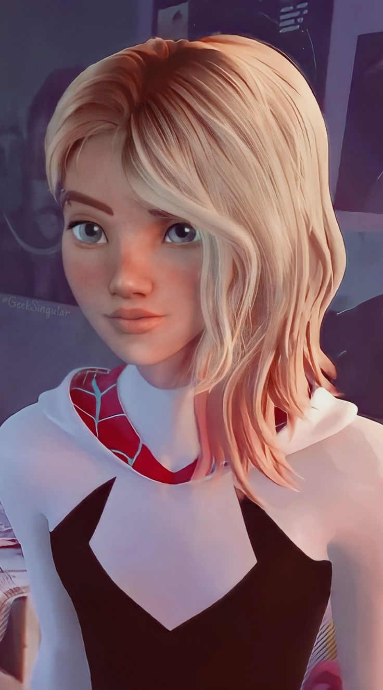
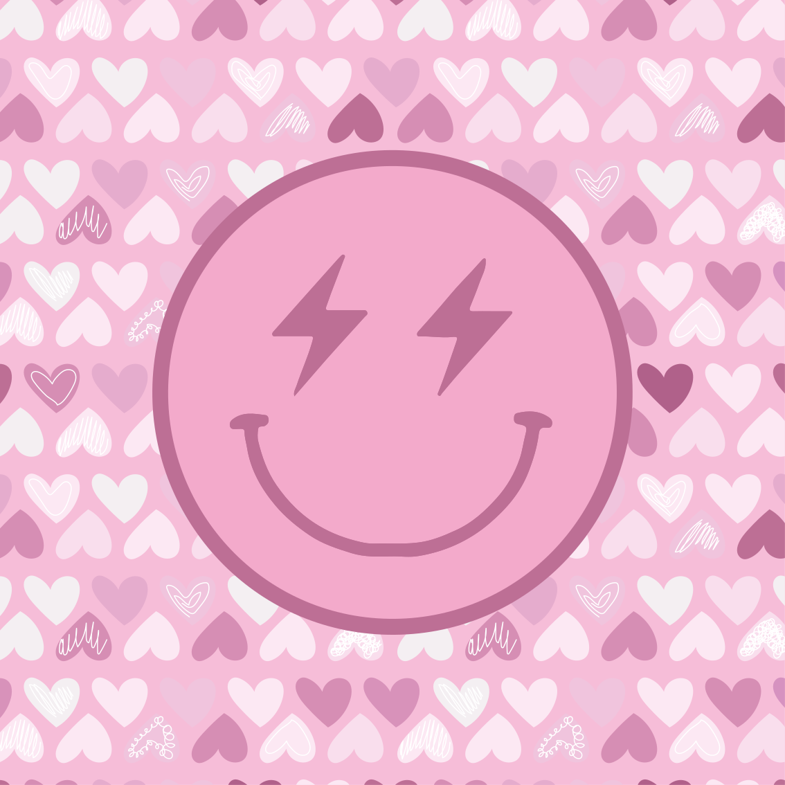
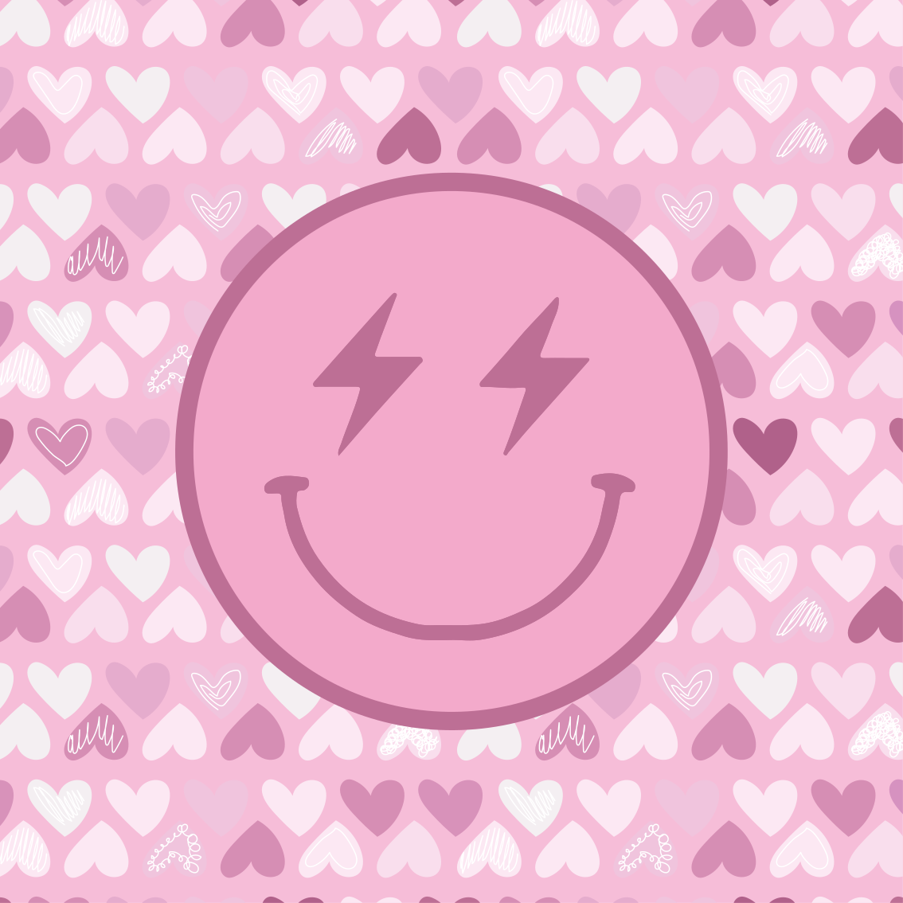

 This is SpiderGwen
 

Life brings us as many joyful moments as it does downfalls, and although there are days we wish there was a manual to follow, it simply wouldn’t be the same without the spontaneity. The journey of life may not become easier as we grow older, but we do seem to understand it better as our perspectives evolve.